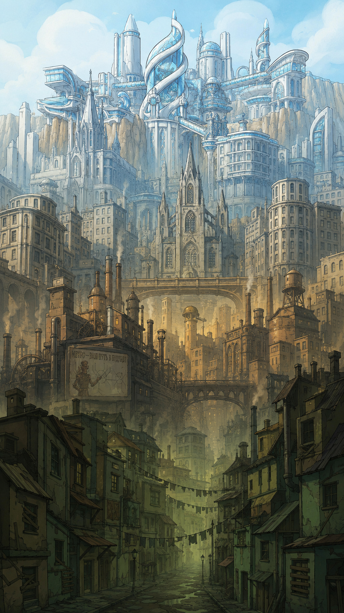
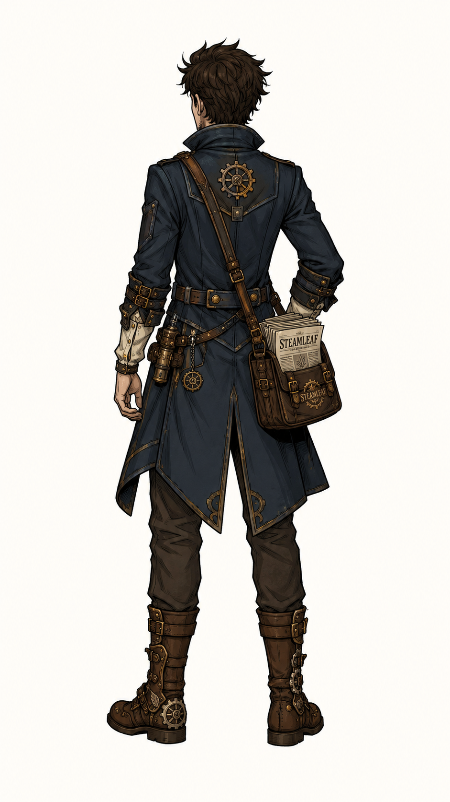
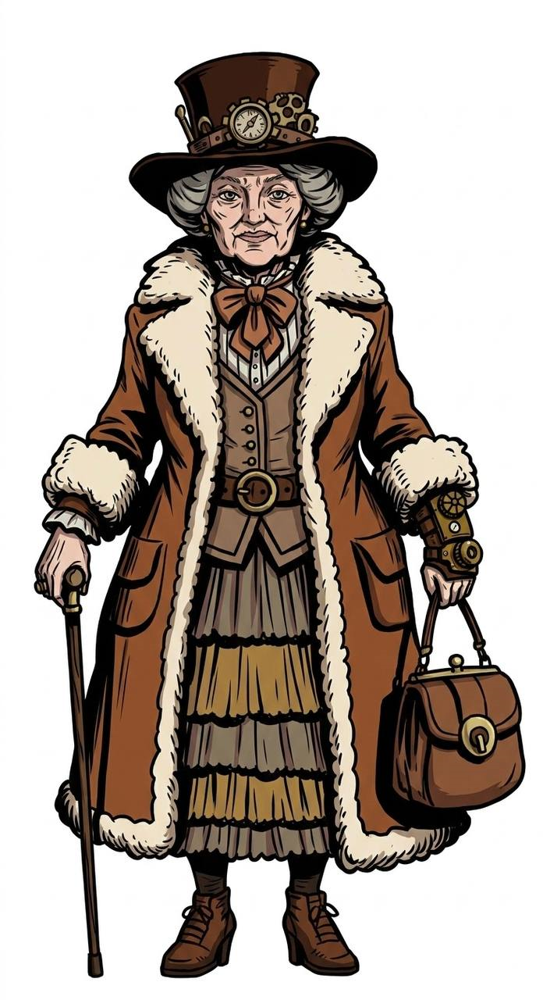
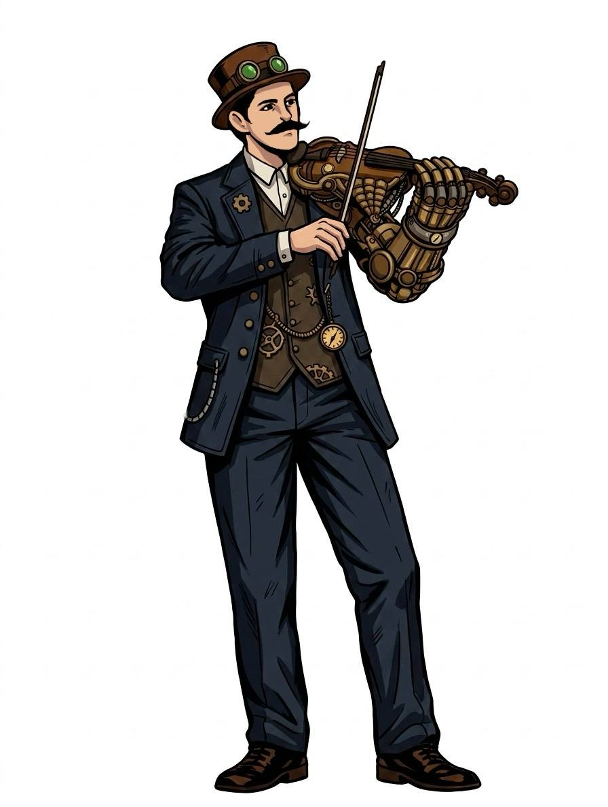
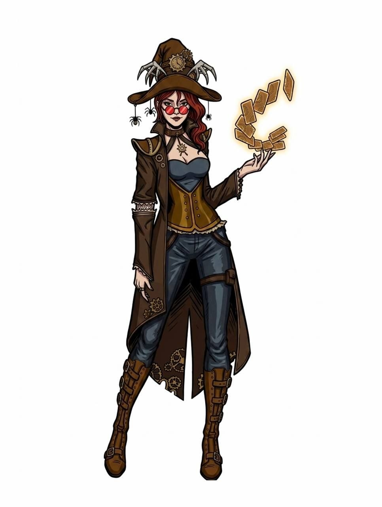
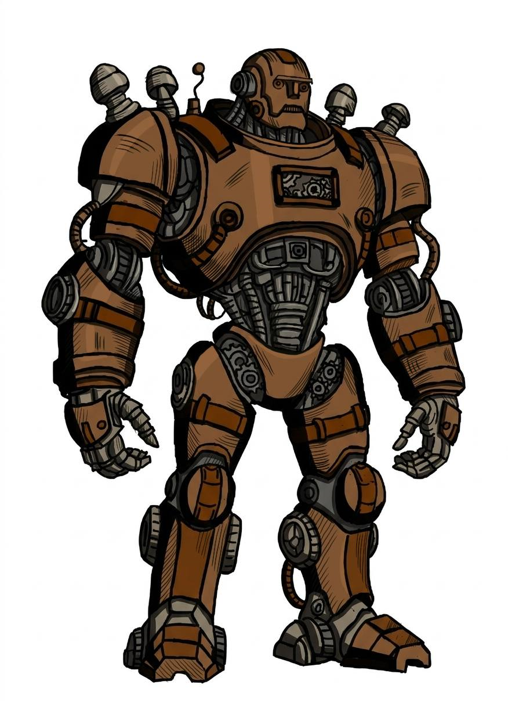
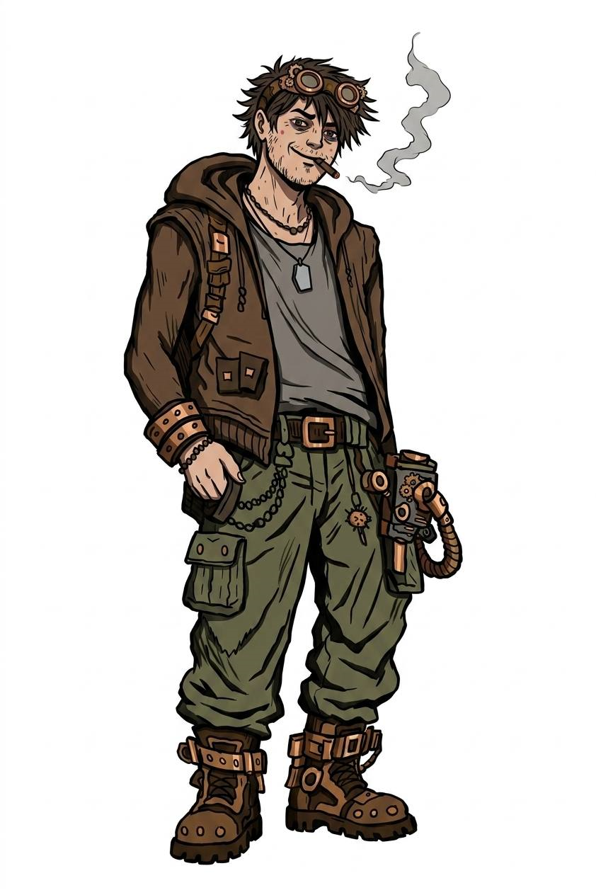
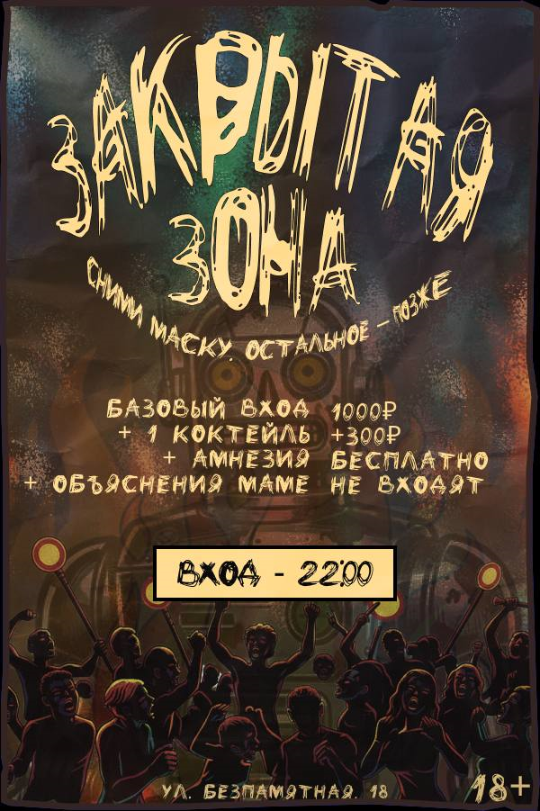
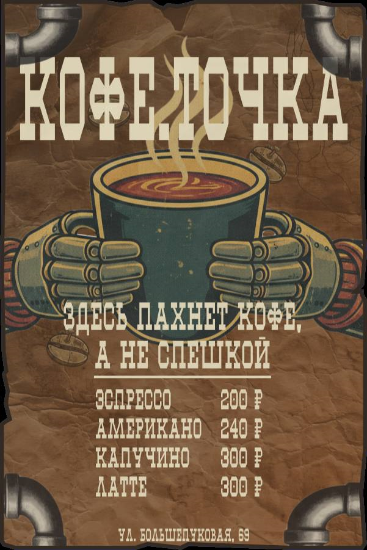

Сюжет
История героя раскрывается через работу, встречи, поручения и выбор игрока.
Нарративный квест · RPG · Стимпанк
Сюжетная игра о молодом промоутере в стимпанк-городе, где социальный рейтинг SR определяет доступ к районам, отношение персонажей и возможности героя.

Стимпанк-город STEAMLEAF«Двоечка» ждёт покупателей
О проекте
STEAMLEAF — разрабатываемая сюжетная игра в жанре нарративного квеста с элементами RPG. Игрок управляет молодым промоутером, который раздаёт листовки, выполняет задания, общается с персонажами и влияет на социальный рейтинг.
Игра сочетает стимпанк-эстетику, социальную сатиру, квестовую структуру и визуальный стиль, построенный вокруг листовок, бумажных интерфейсов и индустриальной атмосферы.
История героя раскрывается через работу, встречи, поручения и выбор игрока.
Решения игрока влияют на реакции NPC и социальный рейтинг.
Мир игры высмеивает бюрократию, рекламу, статусность и рейтинг.
Стимпанк-город, механизмы, пар, листовки и странные персонажи.
Мир игры
Город STEAMLEAF разделён на районы. Доступ к ним зависит от социального рейтинга SR.
Район с низким уровнем SR, тяжёлыми условиями и опасной социальной средой.
Стартовая зона героя: дом, офис, магазин «Двоечка» и городские улицы.
Респектабельная часть города с высоким рейтингом и строгими правилами.
Зона власти, высокого статуса и персонажей, влияющих на жизнь города.
Персонажи
Персонажи помогают раскрыть город, сатиру, квестовые линии и систему социального рейтинга.

Главный геройМолодой промоутер, через которого игрок знакомится с миром игры.

Графиня МоксиБогатая дама, связанная с высшим обществом и квестовой линией.

РэйМузыкант-киборг, который стремится добиться выступления.

ЛилитГадалка, которая может выдать случайное атмосферное предсказание.

SP-67Надменный боевой робот, отражающий сатирическую сторону мира.

ВалераОдин из персонажей городского окружения и квестовых взаимодействий.
Команда
Над STEAMLEAF работает команда студентов, разделённая по направлениям: сценарий, гейм-дизайн, программирование, 2D- и 3D-графика, звук, продвижение и техническая документация.
Плешков Кирилл Максимович, Самодуровский Вячеслав Александрович
Баранов Пётр, Елецкий Михаил, Попов Дмитрий
Николаенков Дмитрий, Плетнева Анна, Попова Елизавета, Субботина Валерия
Козырева Елизавета, Крутяков Максим, Лагутенко Алеся, Саяхова Евгения, Троешестова Арина, Чиркова Вероника
Бирюков Артём, Гагарина Екатерина, Гарченко Дарья, Кныш София, Смирнова Дарья
Менеджеры по продвижению, графические дизайнеры, звукорежиссёр и разработчики технической документации.
| № | ФИО | Группа | Роль | Рабочая группа |
|---|---|---|---|---|
| 1 | Баранов Пётр Алексеевич | 251-337 | Бригадир | Сценарист |
| 2 | Бирюков Артём Александрович | 251-335 | Бригадир | 3D-художник |
| 3 | Бородина Екатерина Евгеньевна | 251-334 | Бригадир | Менеджер по продвижению |
| 4 | Власова Анастасия Николаевна | 251-335 | Бригадир | Менеджер по продвижению |
| 5 | Гагарина Екатерина Юрьевна | 251-334 | Бригадир | 3D-художник |
| 6 | Гарченко Дарья Васильевна | 251-334 | Бригадир | 3D-художник |
| 7 | Герин Даниил Алексеевич | 251-335 | Бригадир | Разработчик технической документации |
| 8 | Елецкий Михаил Сергеевич | 251-338 | Бригадир | Сценарист |
| 9 | Каримбаева Анора Еркин кызы | 251-335 | Бригадир | Графический дизайнер |
| 10 | Кинёв Максим Юрьевич | 251-336 | Бригадир | Графический дизайнер |
| 11 | Кныш София Владимировна | 251-336 | Бригадир | 3D-художник |
| 12 | Козырева Елизавета Денисовна | 251-333 | Бригадир | 2D-художник |
| 13 | Кономанина Алиса Петровна | 251-336 | Бригадир | Звукорежиссёр |
| 14 | Крутяков Максим Евгеньевич | 251-336 | Бригадир | 2D-художник |
| 15 | Лагутенко Алеся Вадимовна | 251-336 | Бригадир | 2D-художник |
| 16 | Лыхин Артём Андреевич | 251-338 | Бригадир | Разработчик технической документации |
| 17 | Морев Андрей Владимирович | 251-336 | Бригадир | Менеджер по продвижению |
| 18 | Николаенков Дмитрий Сергеевич | 251-334 | Бригадир | Программист |
| 19 | Плетнева Анна Сергеевна | 251-334 | Бригадир | Программист |
| 20 | Плешков Кирилл Максимович | 251-334 | Лидер проекта | Гейм-дизайнер |
| 21 | Попов Дмитрий Игоревич | 251-337 | Бригадир | Сценарист |
| 22 | Попова Елизавета Валерьевна | 251-334 | Бригадир | Программист |
| 23 | Самодуровский Вячеслав Александрович | 251-334 | Лидер проекта | Гейм-дизайнер |
| 24 | Саяхова Евгения Алексеевна | 251-337 | Бригадир | 2D-художник |
| 25 | Смирнова Дарья Павловна | 251-334 | Бригадир | 3D-художник |
| 26 | Субботина Валерия Романовна | 251-334 | Бригадир | Программист |
| 27 | Троешестова Арина Сергеевна | 251-334 | Бригадир | 2D-художник |
| 28 | Чиркова Вероника Сергеевна | 251-333 | Бригадир | 2D-художник |
Листовки
Листовки — важная часть визуального стиля, геймплея и юмора STEAMLEAF.

Листовка №1Листовки показывают заведения, услуги и абсурдную бюрократию мира.

Листовка №2Игрок раздаёт листовки NPC и получает разные реакции.
 Листовка №3
Листовка №3
Через листовки передаётся ироничный тон проекта.
Журнал разработки
В этом разделе отражён общий ход разработки игры STEAMLEAF, а также работа над сайтом и Telegram-ботом в рамках проектной практики.
Над проектом в рамках проектной практики работают: Лагутенко Алеся и Кинёв Максим.
Была сформирована основная идея STEAMLEAF: сюжетная игра о молодом промоутере в стимпанк-городе, где важную роль играет социальный рейтинг SR.
Был продуман игровой город, разделённый на районы: трущобы, средний район, богатый район и элитный район. Доступ к районам связан с социальным рейтингом.
Были разработаны основные персонажи, их роли в мире игры и квестовые линии. Персонажи помогают раскрывать сатиру, атмосферу и социальную систему STEAMLEAF.
Был сформирован визуальный стиль игры: бумажные интерфейсы, грубая рисованная обводка, приглушённая палитра, листовки и атмосфера индустриального стимпанк-города.
Был создан GitHub-репозиторий проекта и подготовлена его структура: папки для документации, сайта, исходного кода, задания и отчётных материалов.
Были подготовлены Markdown-документы с описанием проекта, сайта, Telegram-бота, команды, материалов игры и хода выполнения практики.
Был создан сайт проекта STEAMLEAF с разделами об игре, мире, персонажах, команде, листовках, журнале разработки, Telegram-боте и ресурсах проекта.
Была разработана концепция Telegram-бота в формате терминала промоутера. Бот должен знакомить пользователя с миром игры, персонажами, районами, листовками и системой социального рейтинга.
Видео
Геймплей уже на видео. Оцените, как это выглядит в движении? 👀
Ваш интерес — сигнал, что мы движемся в правильном направлении.
Будем делать дальше и показывать новые результаты.
Telegram-бот
Telegram-бот STEAMLEAF создаётся как интерактивное дополнение к игре. Он знакомит пользователя с миром проекта, персонажами, районами, листовками и системой социального рейтинга SR.
> Запуск STEAMLEAF Bot...
> Пользователь найден: PROMO-USER
> SR: 450
> Доступный район: Средний район
> Получена новая листовка
Ресурсы
Материалы, инструменты и социальные страницы проекта.